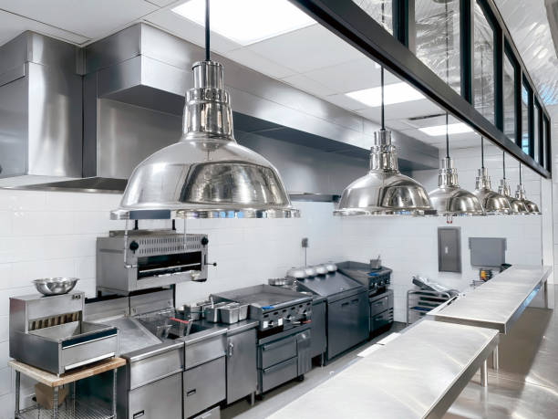

Available Courses for Winter 2023
Desserts 461
This course is designed to test the capabilities of a Pastry chef and will encompass learning how to make the Lemon Meringue Pie, Macarons
and an introduction into the world of realistic cake making. Students will be expected to perform multiple presentations throughout the year where they will be judged by
a panel of 5 judges. Prerequisites include Desserts 295 at a B- Grade, and Desserts 350 at a B- Grade or Pastry 400 at a B- Grade.
Meal Prepping 260
This course is designed to instruct students on more intermediate methods of meal prepping including how to properly remove air from a plastic
bag before putting it in the freezer, and preparing a meal plan over the course of two weeks. This course is designed to be taken in conjunction
with Meals 330. Prerequisites include Meal Prepping 101 at a C- Grade, and Meal Prepping 111 at a C- Grade.
Meals 330
This course is designed with the intent of reinforcing concepts learned in previous courses on how to perfect foods such as a Steak
and potatoes. This course is designed to be taken in conjunction with Meal Prepping 260 as student's will use the meals they have made
during the class to then successfully prepare them for later consumption. Prerequisites include Meals 220 and Meals 252 at a C- Grade,
and Desserts 221 or Barbeque 151 at a C- Grade.
Charle's Cooking School
126 Food Blvd
Foodville, AB, E4T 1T1
+1-800-347-6005
+1-800-347-6005